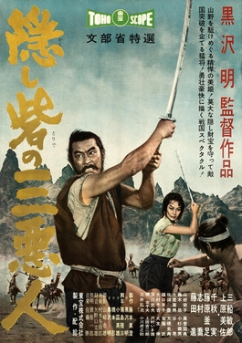
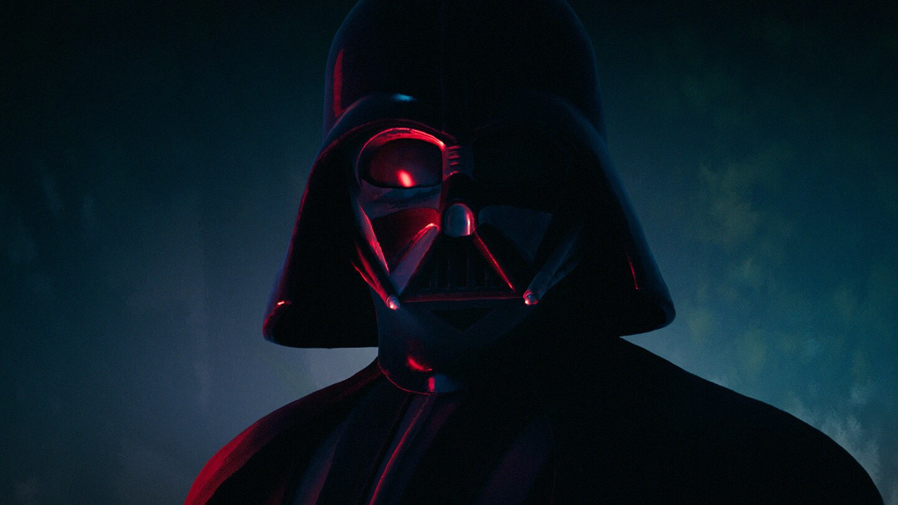

The film primarily follows the perspective of two down on their luck peasants Tahei and Matashichi (又七) both looking to make their fortune after selling their homes to join the feudal Yamana clan (山名氏) as soldiers.
This doesn't go as planned as they both get mistaken for members Akizuki clan (秋月氏), who at this point had been defeated, and are forced to dig graves then later look for hidden riches inside Akizuki Castle.
After slipping away the two of them are able to find gold where they camp out, but just as soon as find it and search for more they are caught by a mysterious man. It was meeting this man that would
change their lives for ever, even if they didn't realize it at the time.

"The Hidden Fortress is the Kurosawa film with the lightest tone. It's almost the most mainstream and entertaining. So for those who may have found other Kurosawa films to be too deep and poetic (if this
applies to you, you're a fool) you'll be more likely to enjoy this. Even though there's a lot of comedy, mostly provided by the peasants, The Hidden Fortress still has all the power and uniqueness that all
Kurosawa films have.
There are some amazing locations used. The rock slide provided for some real amusement. Toshiro Mifune gives a much more toned down and subtle performance than we normally see from him. What Mifune offers in
Hidden Fortress is true screen presence. Without even saying a word he has your full attention. I love how Kurosawa plays the characters as well. The Princess is not a damsel in distress. In any American or
British film of the 50s, she would have been nothing more than that. In this she's quiet for most of the movie, but then she'll come out of nowhere and show more power and confidence than The General. The
peasant characters of Tahei and Matakishi are more than comic relief. They are primarily used for a laugh, but I thought there characters were unique as well. The story is told from their point of view, and
they are essentially heroes, yet they do nothing but complain. They're greedy and selfish. These aren't characteristics that would normally be used for heroes, but Kurosawa makes them likeable to the
audience. Some people have said this movie needed more action. I think the action it has is more than enough. The chase scene that leads into The General's encounter with his nemesis remains one of the best
sequences Kurosawa ever Directed. The choreography in the swordfight holds up against most of The Seven Samurai's fight scenes, and it still tops the type of fights that have become tedious and repetitive
in modern day movies. That fight is a great example of how to nail the Hero vs. Villain energy. Akira Kurosawa can do no wrong."
Everyone resting as Princess Yuki sleeps
What does this have to do with Star Wars?
George Lucas is a massive fan of Kurosawa's work, funnily enough The Hidden Fortress isn't even his top film from his catalog yet it's the one that spawned one of the biggest IPs known to man.
There's a few parallels you can gleam just by the main plot line alone. With the big and dangerous Empire being the Yamana clan and the scrappy rebels the Akizuki clan. Characters like Princess Leia being inspired by Princess Yuki and Obi Wan Kenobi with General Rokurota Makabe (真壁 六郎太). Darth Vader is basically a space samurai complete with a kabuto (兜, 冑) and mengu (面具) as well
as sworn service to a master.
With that said though originally much closer to The Hidden Fortress the creation of the character Luke Skywalker is when it started breaking off into it's own story. Taking the group work built upon
by a genius director from overseas and making another piece of work that inspired many others to get into film/story making and keep the cycle going.

"Like Tahei and Matashichi, R2-D2 and C-3PO are the first characters to appear on the screen, and it is their misadventures that see them becoming embroiled in the story of a rebel princess, an evil empire and a legendary former military general."
C3PO and R2D2
If you want to watch The Hidden Fortress for yourself
The Hidden Fortress [Review of The Hidden Fortress]. IMDb; IMDb.com. from https://www.imdb.com/title/tt0051808/?ref_=mv_close. Accessed 1 June 2026
Gladman, Andrew. “How Akira Kurosawa’s the Hidden Fortress Connects to Star Wars.” CBR, 4 Aug. 2024, www.cbr.com/akira-kurosawa-the-hidden-fortress-star-wars-connection/. Accessed 25 May 2028.
“What Is Kabuto? A Guide to Japanese Samurai Helmets, from Historical Origins to Contemporary Style.” Zenmarket.jp, 6 Aug. 2025, zenmarket.jp/en/blog/post/15717/zl-japanese-samurai-helmet-guide. Accessed 1 June 2026
DAI YOKAI. “Mempo and Mengu: The Samurai Armor Masks (History and Types).” Dai Yokai, 12 Feb. 2026, www.daiyokai.com/en/post/menpo-mengu-samurai-mask-history. Accessed 1 June 2026.
“Darth Vader.” StarWars.com, 2014, www.starwars.com/databank/darth-vader. Accessed 1 June 2026.
Collins, Elle. “The Entire C-3PO and R2-D2 Story Finally Explained.” Looper, 29 Aug. 2019, www.looper.com/164303/the-entire-c-3po-and-r2-d2-story-finally-explained/. Accessed 1 June 2026.
criterioncollection. “George Lucas on Akira Kurosawa.” YouTube, 21 Mar. 2014, www.youtube.com/watch?v=E9V2T1ONA2I. Accessed 1 June 2026.